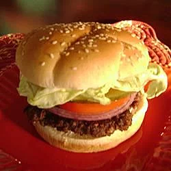

Homestyle Burger
Homestyle Burger

Flavorful burger that is plain simple to make. Good when
your hungry and you don't want to spend too much time in the
kitchen.
Ingredients
- 2 lbs 75% lean ground beef
- 1 (1 oz) package of dry onion soup mix
- 1 egg, lightly beaten
- 2 tsp hot pepper sauce
- 2 tsp worcestershire sauce
- 1/4 tsp ground black pepper
- 3/4 cup rolled oats
Instructions
-
Preheat an outdoor grill for medium high heat and
lightly oil grate.
-
In a large bowl, combine the beef, onion soup mix,
egg, hot sauce and oats. Shape into 6 patties.
-
Grill patties over medium high heat for 10 to 20
minutes, or to desired doneness.